Dispositivo de flotación de emergencia. Al activar produce una reaccion que impulsa al jugador a la superficie.
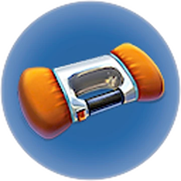Despliega discos holográficos guía. Usados para marcar el camino de vuelta en cuevas o espacios difíciles de navegas. 20 discos por camino max.
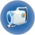Fuente de luz desechable, útil para distraer a algunos depredadores.
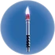Usa baterías, fuente de luz multi-entorno.
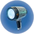Construye compartimentos de hábitat y accesorios a partir de material bruto.
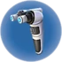Dispositivo cortador apto para penetrar puertas de titanio estándar.
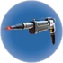Fuente de luz desplegable.
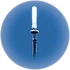Usa la gravedad para atraer y empujar objetos.
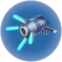Herramienta de reparación, funcional en todos los entornos.
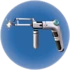Aplica fuerzas de percusión a las entidades al alcance.
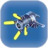Escáner espectroscópico usado para adquirir planos de tecnología e información sobre organismos vivos.
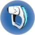Petrifica objetos físicos.
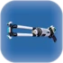Herramienta estándar de supervivencia. Multi-función.
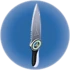Cocina y esteriliza pequeños organismos para el consumo inmediato.
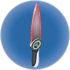